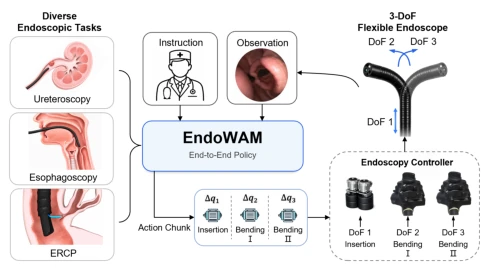
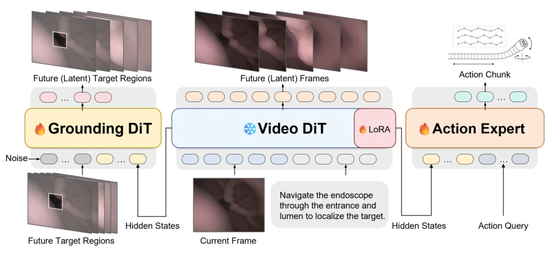
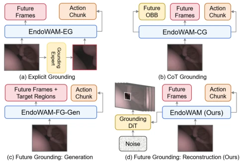
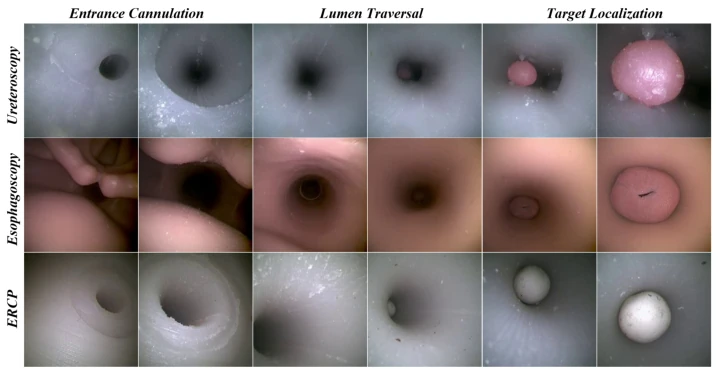
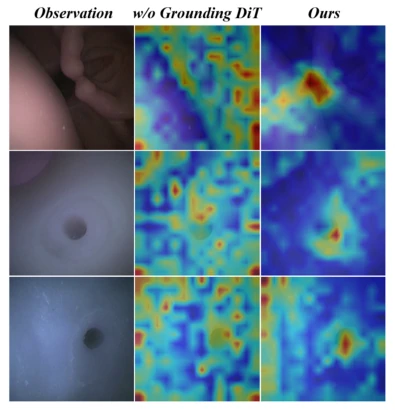
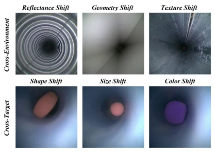

This paper forcefully pushes WAM into the "hell difficulty" scenario of endoscopic navigation, claiming to be the first generalized model. Although "generalization" sounds grand, upon closer inspection, all experiments run on phantoms (models), still a distance from real patients, isn't this "robustness" a bit hollow? However, Future Grounding is indeed a highlight, attempting to constrain predictions using future target regions, stronger than simply looking at the current frame, at least solving some prediction drift problems caused by occlusion and deformation. Inference speed 7.5Hz is much faster than Cosmos Policy, but whether it is fast enough in the operating room depends on clinical judgment. Overall, it is indeed more reliable than direct-mapping VLAs in specific domains, but do not rush to hype "generalization", let it pass the real data hurdle first. Additionally, the EndoMotion dataset constructed by the authors fills the gap in multi-procedure data, this point is worth affirming, but the dataset scale is still too small for training large models, whether it can support more complex tasks subsequently still needs observation.
研究动机Motivation
内镜导航面临组织形变、遮挡和视角变化三大难题，现有基于学习的策略（如 Imitation Learning 或 VLA）通常只从当前观测预测动作，缺乏对未来解剖动态的显式建模，导致在安全关键场景下鲁棒性不足 (Kim et al. 2025; Lin et al. 2026)。World Action Models (WAMs) 虽然能捕捉物理动态，但直接扩展到内镜领域面临数据稀缺、视野受限和推理延迟高的问题 (Li et al. 2026)。现有 grounding 方法多局限于当前观测，无法捕捉任务相关目标的空间演化 (Huang et al. 2025; Lai et al. 2024)。此外，伦理约束和高昂的临床成本限制了大规模导航数据的收集 (Li et al. 2026)。因此，作者提出 EndoWAM，旨在通过未来 grounding 注入目标感知监督，提升在形变和视觉受限环境下的长程导航能力，并构建 EndoMotion 数据集缓解数据稀缺问题。
Endoscopic navigation faces three major challenges: tissue deformation, occlusion, and viewpoint changes, existing learning-based strategies (such as Imitation Learning or VLA) typically predict actions only from current observations, lacking explicit modeling of future anatomical dynamics, leading to insufficient robustness in safety-critical scenarios (Kim et al. 2025; Lin et al. 2026). World Action Models (WAMs) can capture physical dynamics, but direct extension to the endoscopic field faces problems of data scarcity, limited field of view, and high inference latency (Li et al. 2026). Existing grounding methods are mostly limited to current observations, unable to capture the spatial evolution of task-relevant targets (Huang et al. 2025; Lai et al. 2024). Additionally, ethical constraints and high clinical costs limit the collection of large-scale navigation data (Li et al. 2026). Therefore, the authors propose EndoWAM, aiming to inject target-aware supervision through future grounding, improve long-range navigation capabilities in deformation and vision-limited environments, and construct the EndoMotion dataset to alleviate data scarcity issues.

Figure 1: Overview of EndoWAM for autonomous navi- gation across diverse endoscopic tasks. The policy maps the current observation and instruction to action chunks that control the three degrees of freedom of a flexible endoscope.
方法Method
EndoWAM 采用“预测潜在动态 - 定位 - 行动”范式。整体架构基于预训练的 Cosmos-Predict2.5-2B Video DiT (Agarwal et al. 2025)，通过 LoRA 适配内镜域。核心创新在于 Future Grounding：视频世界模型在去噪过程中提取中间特征 H，该共享表示同时条件化两个头：Action Expert 生成动作块，Grounding DiT 重构未来帧的目标区域潜变量。这不同于传统 grounding 仅定位当前帧，而是预测未来任务相关区域，将目标感知监督注入预测动态中。训练时联合优化视频预测、动作生成和未来目标重建损失，其中 Grounding DiT 使用余弦调度去噪。推理时仅需单步去噪，无需解码未来帧，保证实时性。此外，构建了 EndoMotion 数据集，包含三种内镜程序（输尿管镜、食管镜、ERCP），通过旋转增强视角多样性，解决数据稀缺和视角单一问题，并引入 Kalman 滤波保证标注一致性。
EndoWAM adopts the "predict latent dynamics - localize - act" paradigm. The overall architecture is based on the pre-trained Cosmos-Predict2.5-2B Video DiT (Agarwal et al. 2025), adapted to the endoscopic domain via LoRA. The core innovation lies in Future Grounding: the video world model extracts intermediate features H during the denoising process, this shared representation conditions two heads simultaneously: Action Expert generates action blocks, Grounding DiT reconstructs target region latents for future frames. This differs from traditional grounding which only localizes the current frame, but predicts future task-related regions, injecting target-aware supervision into the predicted dynamics. During training, video prediction, action generation, and future target reconstruction losses are jointly optimized, where Grounding DiT uses cosine schedule denoising. During inference, only single-step denoising is required, no need to decode future frames, ensuring real-time performance. Additionally, the EndoMotion dataset was constructed, containing three endoscopic procedures (ureteroscopy, esophagoscopy, ERCP), enhancing viewpoint diversity through rotation augmentation, solving data scarcity and single viewpoint problems, and introducing Kalman filtering to ensure annotation consistency.

Figure 2: EndoWAM architecture. The Video DiT models future latent dynamics from the current frame and instruction. Its hidden states condition the Grounding DiT to reconstruct future target regions and the action expert to generate an action chunk.

Figure 3: Conceptual comparison of different paradigms in EndoWAM. (a) EndoWAM-EG performs explicit in- put grounding by injecting a grounding-expert crop of the current target. (b) EndoWAM-CG performs CoT grounding by regressing future OBBs from the shared predictive rep- resentation. (c) EndoWAM-FG-Gen jointly generates fu- ture frames and target regions through the world model’s generative pathway. (d) EndoWAM (Ours) performs future grounding by reconstructing the latent target regions of fu- ture frames with a Grounding DiT.
Tested on the EndoMotion dataset, comparing against baselines such as Diffusion Policy, Qwen3, GR00T-N1.7. The evaluation metric is closed-loop navigation success rate. EndoWAM average success rate 80.2%, far exceeding GR00T-N1.7's 27.1%. Ablation experiments show, removing Grounding DiT success rate drops to 37.5%, removing view augmentation drops to 28.1%, proving future grounding and viewpoint diversity are crucial for generalization. Zero-shot experiments maintain 90.1% success rate under unseen environments (texture, geometric offset) and targets (shape, color). Inference speed 7.5Hz, superior to Cosmos Policy's 1.1Hz. Failure mode analysis shows main failure causes are lumen loss or timeout. But it should be noted experiments were all conducted on physical models, not involving real clinical data, and EndoMotion dataset scale is still too small for training large models, whether it can support more complex tasks subsequently still needs observation.

Figure 4: Closed-loop deployment trajectories. Representative EndoWAM rollouts across ureteroscopy, esophagoscopy, and ERCP, covering the three navigation phases: entrance cannulation, lumen traversal, and target localization.

Figure 5: Attention visualization for Grounding DiT abla- tion. Without the Grounding DiT, the policy attends diffusely to specular highlights and mucosal textures, whereas the full model concentrates its attention around the task-relevant tar- get even under darkness and partial occlusion.

Figure 6: Zero-shot deployment examples. Representative observations from EndoWAM rollouts under unseen cross- environment shifts in lumen reflectance, geometry, and tex- ture, and cross-target shifts in target shape, size, and color.